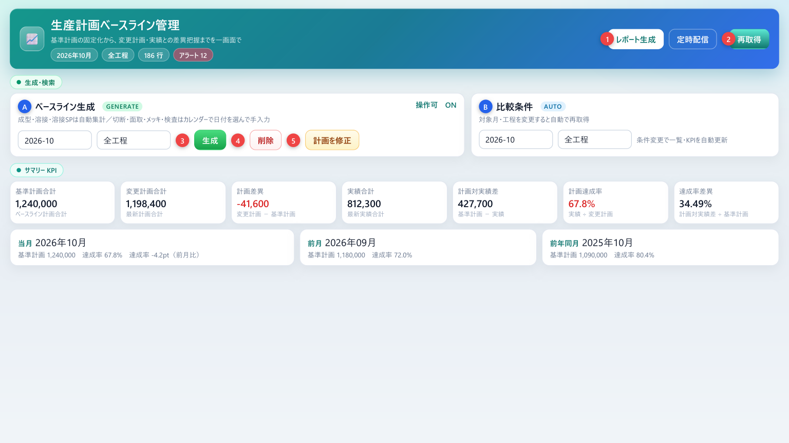
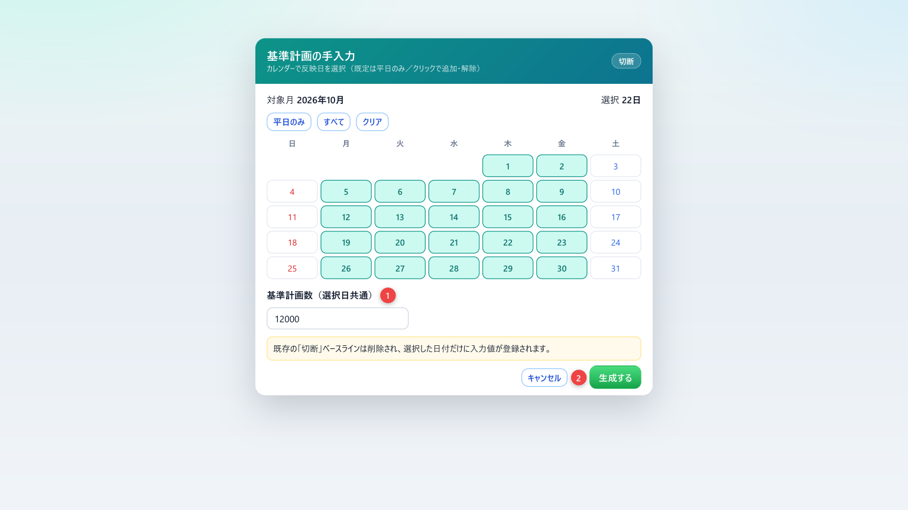
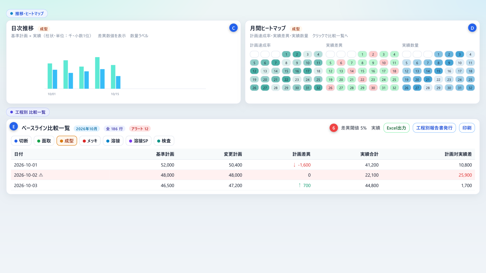
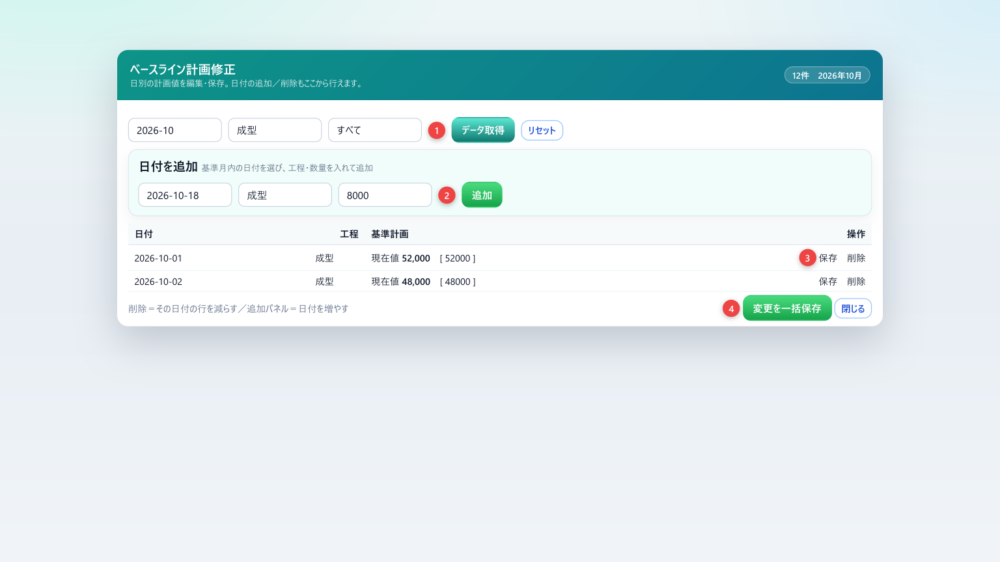

基準計画の固定化から、変更計画・実績との差異把握までを一画面で
「生産計画ベースライン管理」は、ある基準月の生産計画をベースライン（基準計画）として固定し、その後の変更計画や実績との差を工程別に見る画面です。月初に基準を決め、月中のぶれと達成状況を同じ画面で確認します。
| できること | 説明 |
|---|---|
| 生成・削除 | 基準月・工程のベースラインを作る、または消す。生成エリアはロックで誤操作を防ぎます |
| 手入力 | 切断・面取・メッキ・検査は、カレンダーで日を選んで同じ数量を登録します |
| 比較 | 基準計画・変更計画・実績・差異を日次で見ます。条件を変えると自動で読み直します |
| KPI・期間比較 | 当月の合計と、前月・前年同月の達成率を並べます |
| チャート | 選んでいる工程タブの日次推移と、月間ヒートマップを表示します |
| 出力 | Excel、工程をまとめたレポート PDF、表示中タブの印刷 |
| 用語 | 意味 |
|---|---|
| 基準計画 | ベースライン生成（または手修正）で固定した日次の計画数量 |
| 変更計画 | いまの計画数量。工程によって、基準計画と同じ場合と、別の計画列を見る場合があります |
| 計画差異 | 変更計画 − 基準計画。プラスは増加、マイナスは減少です |
| 実績合計 | 在庫取引記録から集計した、その日の実績数量。無い日は「-」 |
| 計画対実績差 | 基準計画 − 実績 |
| 計画達成率 | 実績 ÷ 変更計画。変更計画が 0 のときは「-」 |
| 溶接SP | 製品名が FE-7 または CH2 RR の溶接。それ以外の溶接とは別工程として扱います |
画面パスは /erp/production/plan-baseline です。タイトルは「生産計画ベースライン管理」、説明は「基準計画の固定化から、変更計画・実績との差異把握までを一画面で」です。
タイトル横の ? から、この操作説明（マニュアル）を別タブで開けます。メニューに項目が無いときは、ロールにこの画面の参照権限がありません。
上から、ヘッダー、生成・検索、サマリー KPI、推移・ヒートマップ、工程別の比較一覧、の順です。画面図は現行画面と同じヘッダー色・カード・ボタン色です。数値は説明用です。

| 場所 | 内容 |
|---|---|
| ヘッダー | 対象年月、工程、行数、アラート件数。レポート生成、定時配信、再取得、? |
| ベースライン生成 | 初期はロック中。スイッチを ON にすると基準月・工程・生成・削除・計画を修正が使えます |
| 比較条件 | 対象月と工程。変えると約 0.3 秒後に一覧と KPI を読み直します。検索ボタンはありません |
| サマリー KPI | 7 枚の合計カードと、当月・前月・前年同月の 3 枚 |
| 推移・ヒートマップ | いま開いている工程タブに連動します |
| 比較一覧 | データがある工程だけタブになります。外注メッキ・外注溶接などは出しません |
生成エリアの右上は、開いた直後 ロック中（OFF） です。基準月・工程・生成・削除・計画を修正は押せません。スイッチを ON（操作可） にしてから操作します。比較条件と一覧は、ロックと無関係に使えます。
工程が切断・面取・メッキ・検査のときは、確認の前に「基準計画の手入力」が開きます（第5章）。それ以外は次の確認が出ます。
完了すると「ベースラインを生成しました」と出て、比較条件が生成と同じ月・工程に揃い、一覧を読み直します。
| 工程 | 基準計画の作り方 |
|---|---|
| 成型 | 生産サマリの molding_plan を日次合計 |
| 溶接 | welding_plan の日次合計。製品名 FE-7・CH2 RR は含めず、溶接SP 側に分けます |
| 溶接SP | 製品名が FE-7 または CH2 RR の welding_plan |
| 切断・面取・メッキ・検査 | 自動集計しません。第5章のカレンダーで選んだ日だけに、同じ数量を登録します |
| 上記以外（全工程生成時の残り） | Excel 取込（production_plan_updates）を優先し、無い日はサマリの各 plan 列で補います |
完了すると「ベースラインを削除しました」と出て、比較一覧も同じ条件で更新されます。
工程が 切断・面取・メッキ・検査 のどれかで 生成 を押すと、「基準計画の手入力」が開きます。成型・溶接・溶接SP、および全工程の自動生成では開きません。

比較条件は生成エリアと別です。ロックが OFF でも使えます。
| 項目 | 動き |
|---|---|
| 対象月 | 一覧・KPI・チャートの月。初期値は当月 |
| 工程 | 空欄は全工程。指定するとその工程だけを取得します |
| 自動更新 | 月または工程を変えると、約 0.3 秒後に再取得します。検索ボタンはありません |
| 再取得 | ヘッダーのボタン。いまの比較条件で読み直します |
生成または削除が成功したあとは、比較条件が生成側の基準月・工程に自動で揃います。
データが無いカードは「-」です。数値は比較条件の範囲の合計です。カードの並びと色は図 3-1 のとおりです。
| カード | 計算 |
|---|---|
| 基準計画合計 | ベースライン計画の合計 |
| 変更計画合計 | 最新計画の合計 |
| 計画差異 | 変更計画 − 基準計画。マイナスは赤字 |
| 実績合計 | 実績の合計。集計できないときは「-」 |
| 計画対実績差 | 基準計画 − 実績 |
| 計画達成率 | 実績 ÷ 変更計画（小数第 1 位の %）。100% 未満は注意色 |
| 達成率差異 | 計画対実績差 ÷ 基準計画合計（小数第 2 位の %） |
その下に 当月・前月・前年同月 の 3 枚があります。それぞれ基準計画、計画達成率、計画対実績差を出します。当月カードには、達成率の前月比（pt）と前年同月比（pt）が付きます。前月または前年に比較データが無いときは「—」です。

チャートも一覧も、比較一覧で開いている工程タブの日次データです。タブを変えるとグラフもカレンダーも変わります。
| パネル | 見方 |
|---|---|
| 計画達成率 | 低い日ほど薄く、高い日ほど濃くなります |
| 実績差異 | 単位は千。負は赤寄り、正は緑寄りです |
| 実績数量 | 単位は千。少ない日と多い日の濃さが違います |
日付のマスをクリックすると、下の比較一覧でその日の行まで移動し、しばらく強調されます。
データが 1 件以上ある工程だけがタブになります。並びは 切断、面取、成型、メッキ、溶接、溶接SP、検査 です。色は図 8-1 のとおり、工程ごとに分かれます。タブにアラートがあると件数の印が付きます。次の工程名は一覧に出しません。溶接前検査、外注検査前、外注支給前、外注支給前工程、外注メッキ、外注溶接。
| 列 | 内容 |
|---|---|
| 日付 | YYYY-MM-DD。アラートの日は警告アイコン。マウスを置くと理由が出ます |
| 基準計画 | 生成時に固定した値。列見出しの ? に工程ごとの出典があります |
| 変更計画 | いまの計画。切断・面取・メッキ・検査・外注倉庫は基準計画と同じです。成型は molding_plan。溶接／溶接SP は welding_actual_plan（溶接SP は FE-7・CH2 RR、サマリのみ。合計 0 の日も反映し、サマリが無い日は 0） |
| 計画差異 | 変更計画 − 基準計画。増加は上矢印、減少は下矢印 |
| 実績合計 | 在庫取引記録の日次実績。溶接／溶接SP は製品名で分けます。無い日は「-」 |
| 計画対実績差 | 基準計画 − 実績。実績が無い日は「-」 |
表の下の合計は、その工程タブの基準計画・変更計画・計画差異・実績・計画対実績差です。
基準計画に対する差の絶対値が、閾値（%）を超えた行を強調します。初期値は 5%、監視は実績のみ ON、計画は OFF です。アラートのみにすると、そのタブはアラート行だけになります。
生成エリアのロックを ON にし、計画を修正を押すと「ベースライン計画修正」が開きます。基準月と工程は、生成エリアの値が初期値です。開くと自動でデータを取得します。

| 操作 | 内容 |
|---|---|
| データ取得 | 基準月・工程に合う行を読み直します。0 件のときは「該当データがありません。上のパネルから日付を追加できます」 |
| リセット | 基準月を生成エリアの月に戻し、工程を空にして一覧を空にします |
| 表示 | すべて／編集あり（未保存の行だけ）／比較アラート日 |
| 日付を追加 | 基準月の中の日付、工程、0 以上の数量。同じ日・同じ工程が既にあるときは入力欄へ写し、「既存行の数量を更新しました。保存してください」 |
| 保存 | その行だけ即時保存。「修正しました」 |
| 削除 | その日・その工程の行を消します。確認後に取り消せません |
| 変更を一括保存 | 現在値と違う行だけ順に保存します。差が無いときは「変更された項目がありません」 |
| 閉じる | ダイアログを閉じます。未保存の入力は残りません |
数量欄では、矢印キーと Enter で上下の行へ移動できます。追加・保存・削除のあと、背面の比較一覧も読み直します。
どちらも、比較データがある工程を 1 つの PDF にまとめてサーバーへ保存し、そのあとブラウザの印刷ダイアログを開きます。対象は切断・面取・成型・メッキ・溶接・溶接SP・検査のうち、行がある工程です。処理中は「レポート生成」の進捗が出て、閉じられません。
データが無いときは「切断・面取・成型・メッキ・溶接・溶接SP・検査のいずれにも比較データがありません。条件を確認し、先に検索を実行してください。」と出ます（比較は自動取得です。再取得を押してから再度実行してください）。
PDF は工程ごとに 2 ページです。1 ページ目は日次表、2 ページ目は日次推移とヒートマップです。
ヘッダーの定時配信は、報告センターのスケジュールタブを開きます。毎週金曜 19:00 に自動生成し、メールに添付します。宛先は報告センター／通知設定で指定します。
一覧ヘッダーの Excel出力 は、表示中の比較を .xlsx でダウンロードします。ファイル名の例は 生産計画ベースライン比較_2026-10.xlsx です。
0 件のときは「比較データがありません。先に検索を実行してください。」です。
一覧の印刷は、いま開いている工程タブの表だけをブラウザ印刷します。画面全体ではありません。行が無いときは「印刷するデータがありません」です。
ボタンは見えていても、生産計画モジュールの操作権限が無いと「生産計画の操作権限がありません」と出て処理は始まりません。
| 権限 | できる操作 |
|---|---|
| 参照 | 画面を開く、比較条件、KPI、チャート、一覧の閲覧 |
| 登録 | 生成、手入力の生成、変更の一括保存 |
| 編集 | 計画修正の行保存、日付の追加 |
| 削除 | 月・工程の削除、計画修正での行削除 |
| エクスポート | レポート生成、工程別報告書発行、Excel出力、印刷 |
| メッセージ | 意味と対処 |
|---|---|
| 対象月を選択してください | 基準月が空で生成または削除した。月を選ぶ |
| 基準月を選択してください | 修正ダイアログで月が空。月を選んでデータ取得する |
| 反映する日付を1日以上選択してください | 手入力で日が 0。カレンダーで日を選ぶ |
| 基準計画数を入力してください（0以上） | 数量が空、または 0 未満。0 以上の整数を入れる |
| ベースラインを生成しました | 生成成功。比較一覧が更新される |
| ベースライン生成に失敗しました | 通信またはサーバ。月・工程・元データを確認して再実行 |
| ベースラインを削除しました | 削除成功。取り消せない |
| 比較データの取得に失敗しました | 再取得する。続くときは権限とサーバを確認 |
| 該当データがありません。上のパネルから日付を追加できます | その月・工程に行が無い。生成するか、日付を追加する |
| 追加する日付を選択してください／工程を選択してください | 追加パネルの必須項目 |
| 日付は基準月の範囲内にしてください | 別の月の日付は追加できない |
| 既存行の数量を更新しました。保存してください | 同じ日・工程がある。行の保存か一括保存が必要 |
| 変更された項目がありません | 一括保存時に差分が無い |
| 修正しました／日付を追加しました／削除しました | 行操作の成功 |
| 生産計画の操作権限がありません | 登録・編集・削除・出力の権限が無い。管理者に依頼する |
| Excelを出力しました | ダウンロード成功。保存先はブラウザのダウンロードフォルダ |
| 統合レポートPDFを保存しました | サーバ保存成功。続けて印刷ダイアログが開く |
| レポート生成に失敗しました／保存に失敗しました | 時間をおいて再実行。印刷だけ失敗した場合は、保存済み PDF の有無を管理者に確認 |
| 質問 | 答え |
|---|---|
| 検索ボタンはどこですか | ありません。対象月・工程を変えると自動で読み直します。すぐ読み直すときはヘッダーの再取得です |
| 操業度カードはどこですか | 現行のこの画面にはありません。設備の操業度は、成型計画など各計画画面で確認してください |
| クリアで当月に戻せますか | 比較条件にクリアボタンはありません。対象月を当月に、工程を空に戻してください |
| 手入力の土日が消えました | 生成時の初期選択は平日だけです。土日が必要ならクリックして選んでから生成するか、あとから日付を追加してください |
| 達成率が「-」です | 変更計画の合計が 0、または実績が無いときです |
| 項目 | 内容 |
|---|---|
| 文書名 | 生産計画ベースライン管理 操作説明書 |
| 対象 | ERP → 生産管理 → 生産計画 → 計画ベースライン |
| 画面パス | /erp/production/plan-baseline |
| 版数 | 第 1.0 版 |
| 作成日 | 2026年10月9日 |
| 言語 | 日本語 |
| 日付 | 版 | 内容 |
|---|---|---|
| 2026-10-09 | 1.0 | 現行画面（ロック、手入力カレンダー、溶接SP、期間比較、ヒートマップ、アラート、統合レポート）に合わせて新規作成。旧 Markdown 操作説明は参照用に残す |
以上。ボタン名は 2026年10月9日時点の画面表示と一致します。計画の工数換算や各工程の元データ作成は、それぞれの計画画面の説明に従ってください。